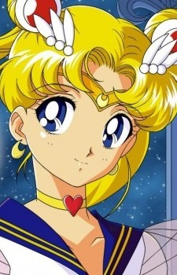

The 90s was the last flush of originality before the 2000s, and it
also brought along digital animation, which increased the amount of anime
produced dramatically by the ease at which animation could be made now.
It was also in this decade that anime became more prevalent outside of
Japan, with shows like Dragon Ball Z breaking records of
animation produced by even Disney.
With the term "moe" coming in full swing, it became more evident the animators
are getting very good at animating, so the cuteness of the characters improves
drastically.
The most popular anime of the 90s include:
(From left to right) The anime being: Cowboy Bebop,
Sailor Moon and Pokemon.
First, in the anime Cowboy Bebop, We reach a contrast,
the creator Shinchiro Watanabe, created two characters to contrast
each other. The first one being the stunning Faye Valentine, a
tricky beautiful woman that has high resemblance to Fujiko Mine from
back in the 70s. The other being a young girl named Ed, who is wacky
but a braniac and a hacker. The characters encompassing both pre-moe
and post-moe as a perfect contrast.
Second, Sailor Moon, like Dragon Ball Z, Sailor Mooon is massively popular anime that aired in the 90s and is known far and wide, even to those that aren't anime fans. The is a romance to peak the interest of females, but it was initially made to try to get males to watch more anime like it by adding in a weekly enemy battle formula, like they did in anime like Fist of the North Star. Each girls was drawn very cutely, and each girl is popular on their own, even without referancing the source.
Third, Pokemon, who doesn't know Pokemon? It is one of the most successful gaming franchise, and a popular anime that airs every saturday in America and Japan. While there were girls in Pokemon, the moe in the anime that was the most popular was actually the Pokemon themselves. The cuteness of the drawings was easier to use to draw in both males and females, unlike monsters from the 80s and 70s. It was with this anime, that monsters in anime would start to look more cute.